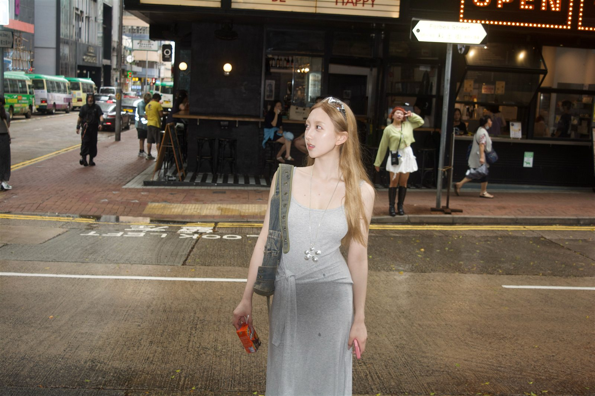

01 / Who
我是谁
我正在把自己训练成一个更会感受、更会表达、更会理解他人的人。很多时候，我会先听完故事，再慢慢说出自己的判断。
读完整介绍
Kim01 / Who
我正在把自己训练成一个更会感受、更会表达、更会理解他人的人。很多时候，我会先听完故事，再慢慢说出自己的判断。
读完整介绍02 / Stories
这里放的不是履历，而是一些形成我的片段：一次转变、一个长期习惯、一段让我重新理解自己的经历。
看看生活片段03 / Now
我喜欢收集能让人展开对话的东西：一本书、一首歌、一段路、一个问题，或者某个突然变清楚的瞬间。
找到共同话题A small note